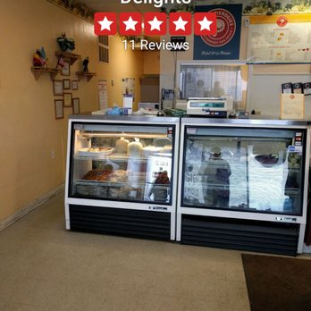

We Award-Wining Pierogies.

Our commitment at Perla Pierogies is
to keep the original recipes that
were passed down through the generations
without compromising quality and taste.
Our pierogies are always prepared
the old-world way: hand-crafted and
made from scratch using
the highest quality ingredients.
WHOLESALE OPPORTUNITIES
Our goal is to provide delicious, handmade pierogies
to people of all ethnicities and backgrounds,
and we are always looking to partner with grocery
stores, restaurants, and other various local businesses
in this pursuit. If you’re interested in carrying our award-winning
pierogies, please contact us for a complete list of our
current offerings.

PROCESS
We are often asked what sets our pierogies apart.
We believe our secret ingredient is the process;
all of our pierogies are hand-crafted using only
the finest ingredients.
The dough is rolled thin in our large rolling
machine. This ensures a consistently delicate
thickness and texture. Once the dough is ready,
it is carefully rolled out and cut into perfect
circles. Any excess dough is pulled away to be
pressed again and used for additional pierogies.
We then portion the filling into the dough and
skillfully fold and pinch each pierogi by hand.
The last step involves boiling the pierogies until
they are fully cooked. Once they are ready,
they are lightly oiled and trayed for cooling.
Each pierogi is then hand-packed for delivery.

You Matter that's why we prepare homemade healthy delights for you!